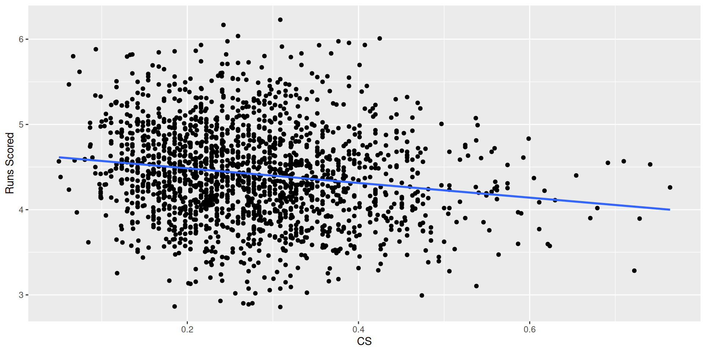

inning team retroID count pitches play
1 1 1 vottj001 0 11>C SB2
2 1 1 vottj001 22 11>C.SB2>FBC K
3 3 1 vottj001 32 BBBCFC K
4 5 1 vottj001 0 1311>X S8/G6+.3-H;1-H;B-2(E5/TH)
5 7 1 vottj001 22 CBBCX 63/G6M.2-3
6 10 1 vottj001 0 <NA> NP
7 10 1 vottj001 0 <NA> NP
8 10 1 vottj001 0 <NA> NP
9 10 1 vottj001 0 <NA> NP
10 10 1 vottj001 32 ....BCFFBBC KLinear Weights
SDS 355
Prof. Baumer
September 15, 2025
What is the value of a play?
Watch
What happened?
- 1st and 3rd, nobody out
- Joey Votto singles
- Billy Hamilton scores from first!
- error allows Votto to advance to 2nd
- two actual runs scored
Retrosheet data
How valuable is a single?
- In this case, 2 runs scored, 2 RBI
- But in general…
Prepare a data set
Convert to per game averages
Set up our basic plot
Regression model for home runs
Singles
Regression model for singles
Stolen bases
Caught stealings
Basic regression model
Call:
lm(formula = R ~ X1B + X2B + X3B + HR + WK + SB, data = filter(teams54rg,
yearID < 2000))
Residuals:
Min 1Q Median 3Q Max
-0.43719 -0.09737 0.00028 0.09707 0.47134
Coefficients:
Estimate Std. Error t value Pr(>|t|)
(Intercept) -2.62043 0.08343 -31.410 < 2e-16 ***
X1B 0.51316 0.01261 40.703 < 2e-16 ***
X2B 0.61460 0.02399 25.623 < 2e-16 ***
X3B 1.29969 0.07083 18.351 < 2e-16 ***
HR 1.52896 0.02420 63.192 < 2e-16 ***
WK 0.34013 0.01074 31.659 < 2e-16 ***
SB 0.12645 0.01738 7.277 6.58e-13 ***
---
Signif. codes: 0 '***' 0.001 '**' 0.01 '*' 0.05 '.' 0.1 ' ' 1
Residual standard error: 0.1488 on 1071 degrees of freedom
Multiple R-squared: 0.9306, Adjusted R-squared: 0.9302
F-statistic: 2394 on 6 and 1071 DF, p-value: < 2.2e-16Full regression model
Iterate over eras
# A tibble: 1 × 9
`(Intercept)` X1B X2B X3B HR WK SB CS OUTS
<dbl> <dbl> <dbl> <dbl> <dbl> <dbl> <dbl> <dbl> <dbl>
1 1.05 0.483 0.556 1.25 1.49 0.325 0.189 -0.267 -0.129# A tibble: 5 × 9
`(Intercept)` X1B X2B X3B HR WK SB CS OUTS
<dbl> <dbl> <dbl> <dbl> <dbl> <dbl> <dbl> <dbl> <dbl>
1 -0.245 0.541 0.491 0.845 1.63 0.374 0.299 0.0611 -0.0996
2 0.873 0.472 0.615 1.42 1.52 0.291 0.219 -0.363 -0.119
3 -0.320 0.505 0.679 1.02 1.46 0.336 0.208 -0.175 -0.0885
4 0.0815 0.503 0.770 1.09 1.50 0.312 0.168 -0.227 -0.110
5 1.60 0.365 0.777 1.63 1.40 0.298 0.211 -0.474 -0.130 Evaluating run estimators
Common run estimators
teams54 <- teams54 |>
mutate(
R = R/G,
BAVG = H / AB,
OBP = (H + WK) / (AB + WK + ifelse(is.na(SF), 0, SF)),
SLG = (X1B + 2*X2B + 3*X3B + 4*HR) / AB,
OPS = OBP + SLG,
LWTS = 0.46*X1B + 0.8*X2B + 1.02*X3B + 1.4*HR + 0.33*WK + 0.3*SB - 0.6*CS - 0.25*(OUTS),
XR = (0.5*X1B + 0.72*X2B + 1.04*X3B + 1.44*HR + 0.33*WK + 0.18*SB -0.32*CS - 0.098*OUTS) / G,
RC = OBP * SLG
) Batting average
On-base percentage
Slugging percentage
OPS
eXtrapolated Runs
Runs Created
Correlation
R BAVG OBP SLG OPS LWTS XR
R 1.0000000 0.7452374 0.8595853 0.9098903 0.9527274 0.9446182 0.9600107
BAVG 0.7452374 1.0000000 0.8414923 0.6821185 0.7812527 0.7709039 0.7790329
OBP 0.8595853 0.8414923 1.0000000 0.7242935 0.8657659 0.8839206 0.8904464
SLG 0.9098903 0.6821185 0.7242935 1.0000000 0.9721242 0.9355944 0.9483656
OPS 0.9527274 0.7812527 0.8657659 0.9721242 1.0000000 0.9796594 0.9911482
LWTS 0.9446182 0.7709039 0.8839206 0.9355944 0.9796594 1.0000000 0.9872646
XR 0.9600107 0.7790329 0.8904464 0.9483656 0.9911482 0.9872646 1.0000000
RC 0.9550842 0.7916800 0.8827493 0.9621475 0.9985340 0.9810157 0.9927272
RC
R 0.9550842
BAVG 0.7916800
OBP 0.8827493
SLG 0.9621475
OPS 0.9985340
LWTS 0.9810157
XR 0.9927272
RC 1.0000000
SDS 355